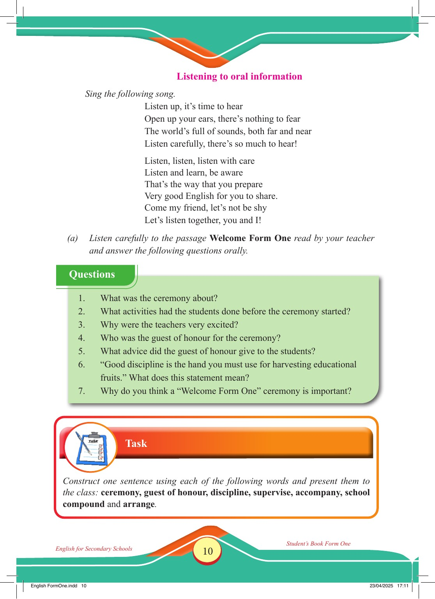

Accessible text transcript - page 10
Use the reader's read-aloud controls or select an individual segment below.
Printed book page 10. Listening to oral information Sing the following song. Listen up, it’s time to hear Open up your ears, there’s nothing to fear The world’s full of sounds, both far and near Listen carefully, there’s so much to hear! Listen, listen, listen with care Listen and learn, be aware That’s the way that you prepare Very good English for you to share. Come my friend, let’s not be shy Let’s listen together, you and I! (a) Listen carefully to the passage Welcome Form One read by your teacher and answer the following questions orally. Green box titled “Questions” listing seven oral comprehension questions about the Welcome Form One ceremony, including the ceremony, activities before it started, teachers’ excitement, the guest of honour, advice given, the meaning of good discipline, and the importance of the ceremony. Questions 1. What was the ceremony about? 2. What activities had the students done before the ceremony started? 3. Why were the teachers very excited? 4. Who was the guest of honour for the ceremony? 5. What advice did the guest of honour give to the students? 6. “Good discipline is the hand you must use for harvesting educational fruits.” What does this statement mean? 7. Why do you think a “Welcome Form One” ceremony is important? Task Construct one sentence using each of the following words and present them to the class: ceremony, guest of honour, discipline, supervise, accompany, school compound and arrange. English for Secondary Schools Student’s Book Form One English FormOne.indd 10 23/04/2025 17:11 Return to the page image